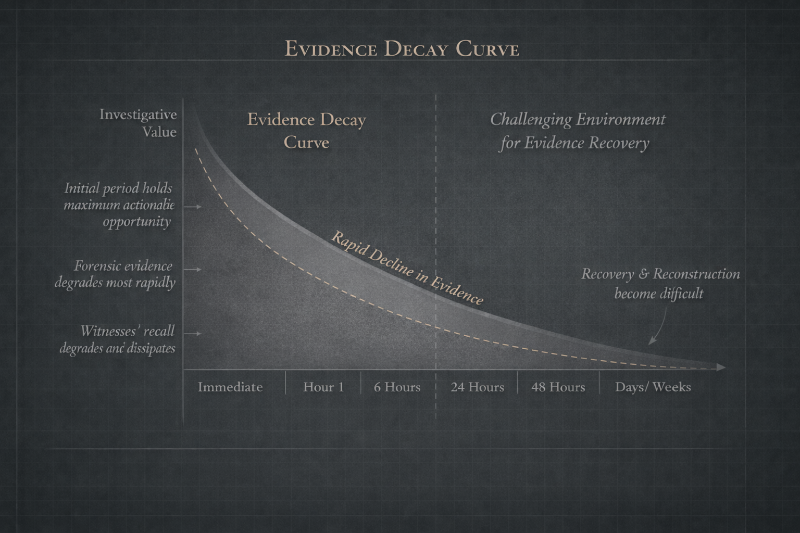
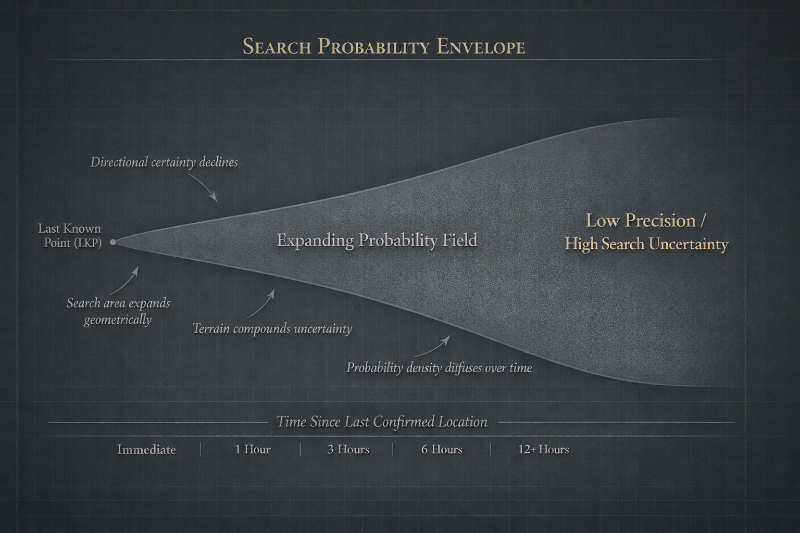

Investigative Trajectory Model
A structural sequence linking classification, speed, preservation, clarity, amplification, elasticity, and probability.
Research
The Unfound Project examines missing persons investigations as institutional systems shaped by classification, response speed, preservation, visibility, and long-term investigative persistence.
Research Overview
The Unfound Project applies systems analysis to missing persons response in the United States. Rather than focusing primarily on narrative reconstruction, the project studies the institutional architecture that shapes investigative trajectory over time.
This includes classification decisions, response speed, evidence preservation, search conditions, media amplification, inter-agency coordination, and the long-term elasticity of unresolved cases.
Methodology
Cases are examined as evolving trajectories shaped by identifiable structural variables.
The project evaluates how timing influences the survival of digital, testimonial, and physical evidence.
Search conditions are considered through terrain, uncertainty, and movement assumptions.
Public visibility is studied as a structural variable that alters investigative reach and elasticity.
The project evaluates how fragmented systems influence continuity, clarity, and speed.
The research identifies leverage points where procedural reform may reduce preventable narrowing.
Research Exhibits
A structural sequence linking classification, speed, preservation, clarity, amplification, elasticity, and probability.

A visual model showing how momentum narrows over time as evidence and attention decline.

A model illustrating how evidence windows contract during the early investigative phase.

A model examining how uncertainty expands as time delay and terrain increase search scope.
Data Sources
NCIC missing persons statistics and related law-enforcement reporting structures.
Publicly documented timelines, reporting archives, and investigative summaries.
Probability-based search frameworks, terrain considerations, and timing analysis.
Coverage dynamics, amplification patterns, and the relationship between visibility and momentum.
Jurisdictional fragmentation, reporting pathways, alert systems, and preservation practices.
Potential areas of procedural reform including preservation, reporting consistency, and cold case infrastructure.